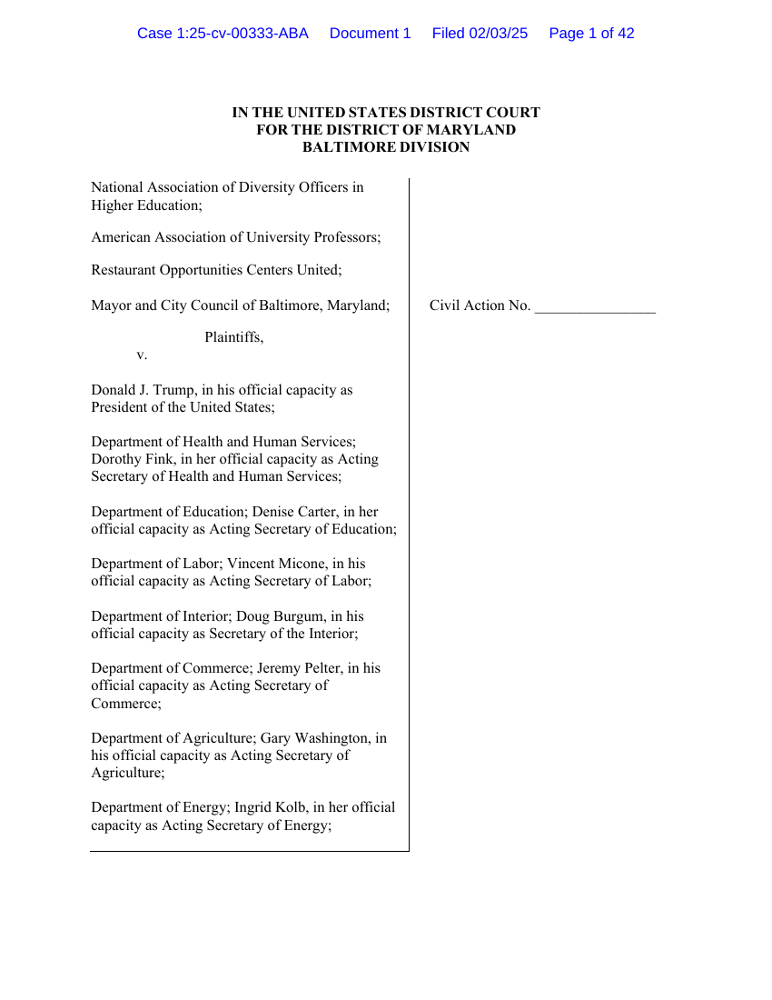

38:33 · 4 OPERE
Su un comunicato dell'Associazione americana dei professori universitari.
Il filo del discorso
Il contributo prende avvio da un comunicato dell’American Association of University Professors sull’azione giudiziaria contro gli ordini esecutivi di Trump relativi ai programmi DEI. Dr Divago ne legge e traduce alcuni passi, contestando il linguaggio dell’associazione e la sua concezione di diversità ed eguaglianza. Nella sua lettura, la difesa di quei programmi esprime una rinuncia al merito e alla responsabilità intellettuale; il richiamo a Heidegger e Bonhoeffer collega la polemica al rapporto fra parola, conformismo e giudizio. La discussione si allarga alle università, al dissenso e ai docenti che rifiutarono il giuramento fascista, accostamento storico proposto dal relatore. Seguono esempi su Oxford, Boeing e gli aiuti statunitensi, con affermazioni che richiedono correzioni o riscontri distinti. L’ultima parte tratta Einstein e Israele, critica interventi politici non ascoltati integralmente dall’autore e torna al dovere di informarsi prima di aderire a un gruppo. Il filo comune è la richiesta di argomentazione e responsabilità pubblica. Le valutazioni politiche rimangono attribuite a Dr Divago; il ricorso è un atto di parte, e la sua presentazione non dimostra né l’illegittimità definitiva degli ordini né l’infondatezza delle obiezioni giuridiche.
I libri nel discorso

NADOHE et al. v. Trump et al. — Complaint for Declaratory and Injunctive Relief
Identificazione probabile
Prima pagina del ricorso: U.S. District Court for the District of Maryland, Baltimore Division, causa 1:25-cv-00333-ABA, documento 1, depositato3 febbraio 2025, 42 pagine.
Rendering integrale della prima pagina del PDF depositato in tribunale e collegato da AAUP. Intestazione, parti e segnatura di deposito verificati; è un atto dei ricorrenti, non una sentenza né una copertina libraria. La prima pagina continua l’elenco dei convenuti nella successiva.
Ricorso richiamato nel comunicato AAUP: soggetti e argomenti corrispondono al deposito3 febbraio 2025; titolo processuale completo non pronunciato.
Passaggio 4:46 ↗ · Fonti e libro ↗
Essere e tempo
Identificazione probabile
Copertina: Longanesi · 2005 · traduzione di Pietro Chiodi, a cura di Franco Volpi
Immagine autentica dell’opera, controllata visivamente; l’edizione di riferimento non è attribuita al filmato.
La chiacchiera di Heidegger, riconducibile a Essere e tempo §35; titolo non pronunciato.
Passaggio 6:05 ↗ · Fonti e libro ↗
Sulla stupidità
Identificazione probabile
Raccolta: Queriniana · Resistenza e resa · edizione di riferimento
Copertina di Resistenza e resa, raccolta indicata dal relatore come provenienza del testo Sulla stupidità. Non è una copertina autonoma del saggio; edizione e traduzione non attribuite alla lettura.
Bonhoeffer e stupidità peggiore del male: rinvio probabile al testo Sulla stupidità, titolo non pronunciato.
Passaggio 11:06 ↗ · Fonti e libro ↗
Bibbia
Identificazione probabile
Copertina: San Paolo, 2014 · Nuova Versione dai Testi Antichi · edizione di riferimento
Sepolcri imbiancati, richiamo biblico probabile a Matteo 23,27; versetto non pronunciato.
Passaggio 27:16 ↗ · Fonti e libro ↗